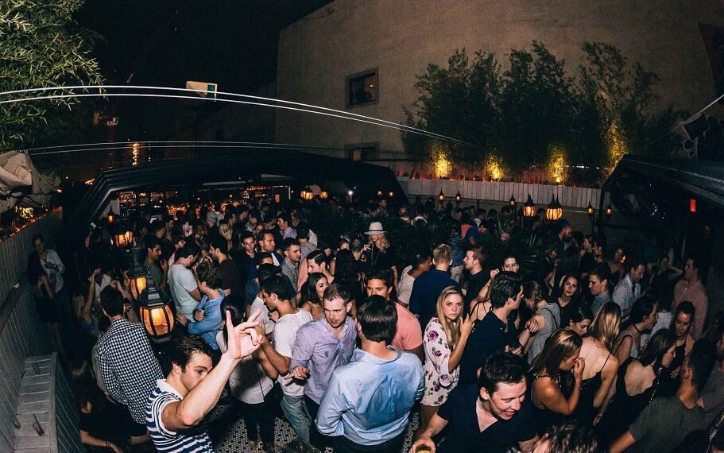

The NYC Itinerary 8/21/2023
Breakfast on the block!
"Pershing Square is a wonderful NYC restaurant, bistro and cocktail bar near Grand Central Station. We serve the best breakfast in NYC, as well as lunch, dinner and weekend brunch. Our pancakes- well they are legendary. The concept has always been to serve classic American cuisine, using the finest & freshest ingredients in one of the prettiest bistros in NYC." -Pershing Square
Afternoon in the big apple!


Experience New York City's largest indoor + outdoor all-season rooftop bar and lounge featuring an “urban amusement park” concept with over-the-top cocktails, bites, unlimited rooftop views, and pink photo moments throughout the space. For a limited time only, dive into the brand-new Pink Bunny Beach located on our renowned bunny putt-putt golf course including pink lifeguard chairs, beach balls galore, and much more. Pink Bunny Beach is open now till September.


Gather your friends for a Fun-filled Game Night that promises to be a whirlwind of laughter, music, and entertainment. This is your chance to let loose, embrace your inner diva, and create memories that will be talked about for years to come. Don't miss out on the most exciting and unforgettable night of the year!
Sights to see!
Dinner in the district!


Playing off the seaport's vintage industrial setting, Industry Kitchen occupies an angular structure featuring reclaimed plank wood, black tile and raw concrete. Floor-to-ceiling windows seamlessly separate the indoor and outdoor areas, framing a picturesque view of the waterfront that can be enjoyed from any seat. Guests have the option of dining at stools overlooking the active kitchen, individual and communal dining tables, the large freestanding bar or the outdoor terrace and lounge.
After hours ontop of towers!


Hotel Chantelle
Not actually a hotel, Ravi Patel's LES spot is named after a French World War II safe house. Hotel Chantelle is retro in design as unmarked doors transport you into Patel's version of 1940's Paris. The room exudes warmth as dark mahogany wood panels blend with the black leather pin tucked banquettes under the glow of flickering exposed bulbs, candles, and a gold floral pattern that bounces off dark wallpaper.
Highlight room
Perched 16 stories above the intersection of Broome and Bowery, The Highlight Room is a glamorous rooftop bar that evokes a 19th-century pleasure garden, with a majestic tree spreading its branches across the room and outdoor terrace. Encased in glass windows on all sides, The Highlight Room offers unparalleled views of the New York skyline and a festive atmosphere perfect for any occasion.
Somewhere nowhere
A two-level indoor lounge and open air rooftop pool venue, sits at the top of the Renaissance NY Chelsea Hotel located at 112 W 25th St, on the 38/39th floors. Our venue offers guests a unique escape from the busy streets and sounds of NYC without having to leave the city.